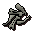
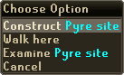

")
Firemaking - Barbarian Firemaking
Getting Started
To start Firemaking in the manner of the barbarians, you must have a Firemaking level of 35, and a bow.
Click here to find out how to start learning barbarian training methods.
Starting Fires without a Tinderbox
One of the great irritations that any aspiring adventurer encounters is the necessity to carry a tinderbox about with them when they wish to train their Firemaking skill. Thankfully for you, the barbarians long ago developed a method whereby logs can be set alight with a bow, and Otto is willing to teach this technique.
| Wood | Level Required |
Firemaking Experience |
 Wood |
21 |
40 |
 Achey |
21 |
40 |
 Oak |
35 |
60 |
 Willow |
50 |
90 |
 Teak |
55 |
105 |
 Arctic pine |
62 |
125 |
 Maple |
65 |
135 |
 Mahogany |
70 |
157.5 |
 Eucalyptus |
78 |
171.2 |
 Yew |
80 |
202.5 |
 Magic |
95 |
303.8 |
Lighting Pyre Ships

When you set a spirit free, it will reward you with one of its precious items - you might even be lucky enough to receive a dragon full helm.

You must first find the bones of barbarian heroes. These can be found as drops in the Ancient Cavern. Be warned that you must find 'chewed bones' rather than 'mangled bones'. Mangled bones are the remains of barbarians whose spirits are maddened by their imprisonment within the caves. Burning Mangled bones will reward you with a spectral assault!
 Pyre ships can only be constructed and burnt where the ground is charred around the lake next to Otto's hut. Right-clicking on these locations will bring up the following menu:
You will need some logs and chewed/mangled bones in your inventory to construct a pyre ship.
Burning a pyre ship will grant you a bonus to your Prayer experience depending upon which type of logs you use to construct the ship. You will receive a 300% bonus to Prayer experience the next few times that you bury bones.
| Wood | Levels Required |
Crafting Experience | Firemaking Experience | Number of Bones with enhanced XP |
Wood |
11 11 |
10 | 40 | 1 |
Achey |
11 11 |
10 | 40 | 1 |
Oak |
25 25 |
15 | 60 | 2 |
Willow |
40 40 |
22.5 | 90 | 2 |
Teak |
45 45 |
26.2 | 105 | 3 |
Arctic pine |
52 52 |
31.2 | 125 | 3 |
Maple |
55 55 |
33.7 | 135 | 3 |
Mahogany |
60 60 |
39.3 | 157.5 | 4 |
Eucalyptus |
68 68 |
42.8 | 171.2 | 4 |
Yew |
70 70 |
50.6 | 202.5 | 4 |
Magic |
85 85 |
75.9 | 303.8 | 5 |

More articles in
Firemaking
|
|
|
Further Help
If this article does not help you, you may find the following sections of the RuneScape site helpful:
|
|